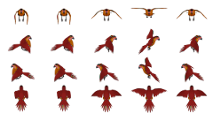
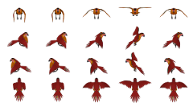

Un projet de jeu écolo opensource sur la faune de la Guyane :
Comment apprendre en créant un jeu vidéo.
Tuiles de 32 * 32 px. Canvas superposés de 768 * 384 px (multiples de 16, de 24 et de 32).
Choisissez votre perso pour le faire apparaître. On peut changer de perso à tout moment, pas très logique, mais rigolo !
Utilisez les flèches du pavé directionnel pour le déplacer.
La souris doit rester dans le cadre du jeu, pour éviter le scrolling intempestif
Testez! Réactualisez en cas de problèmes.
Il y a encore des soucis sous IE. On a ajouté excanvas.js mais ça ne suffit pas.
Il y a encore plein de choses à ajouter et la strcuture du code à améliorer. Aidez-nous sur github ou sur le forum Zeste de Savoir
Scripts: fichiers js/jeu.js, js/images.js, js/carte.js, js/persos.js, js/animation.js, js/clavier.js, js/collision.js, js/changecarte.js, js/inventaire.js, js/pnj.js, js/texte.js, js/main.js, js/excanvas.js


 

Graphismes réalisés avec Blender par Doudoulolita, en s'inpirant de Glitch et d'images libres de droit - Code inspiré du tuto Créer un mini-RPG en Javascript avec canvas de sebcap26 et d'un tuto non terminé de jam-jam68140.